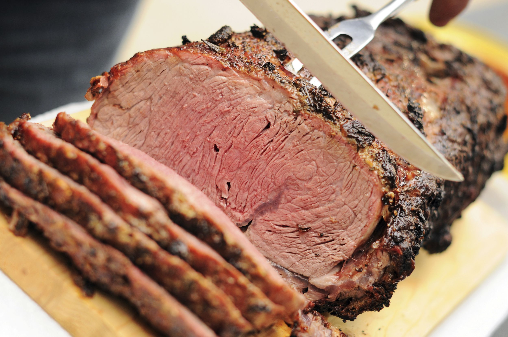
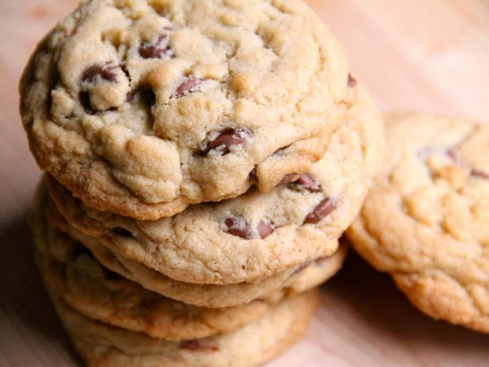
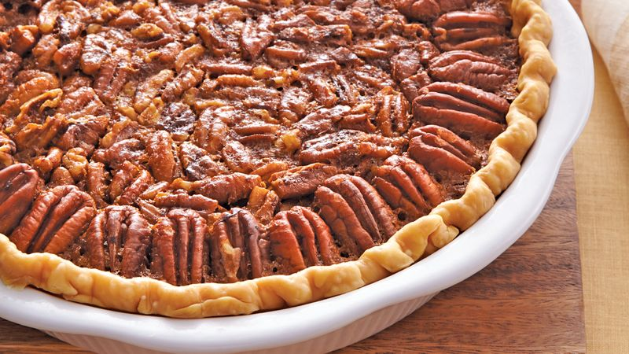

My Favorite Recipies
Lasagna
Lasagna Recipe
| Ingredients | Directions |
|---|---|
| 9 lasagna noodles | Cook noodles according to package directions; drain. |
| 1-1/4 pounds bulk Italian sausage | Meanwhile, in a Dutch oven, cook sausage, beef and onion over medium heat 8-10 minutes or until meat is no longer pink, breaking up meat into crumbles. |
| 3/4 pound ground beef | Add garlic; cook 1 minute. Drain. |
| 1 medium onion, diced | Stir in tomatoes, tomato paste, water, sugar, 3 tablespoons parsley, basil, fennel, 1/2 teaspoon salt and pepper; bring to a boil. Reduce heat; simmer, uncovered, 30 minutes, stirring occasionally. |
| 3 garlic cloves, minced | In a small bowl, mix egg, ricotta cheese, and remaining parsley and salt. |
| 2 cans (one 28 ounces, one 15 ounces) crushed tomatoes | Preheat oven to 375°. |
| 2 cans (6 ounces each) tomato paste | Spread 2 cups meat sauce into an ungreased 13x9-in. baking dish |
| 2/3 cup water | Layer with three noodles and a third of the ricotta mixture. |
| 2 to 3 tablespoons sugar | Sprinkle with 1 cup mozzarella cheese and 2 tablespoons Parmesan cheese. |
| 3 tablespoons plus 1/4 cup minced fresh parsley, divided | Repeat layers twice. Top with remaining meat sauce and cheeses (dish will be full). |
| 2 teaspoons dried basil | Bake, covered, 25 minutes. Bake, uncovered, 25 minutes longer or until bubbly. |
| 3/4 teaspoon fennel seed | Let stand 15 minutes before serving. Yield: 12 servings. |
Prime Rib Roast

Prime Rib Roast Recipe
| Ingredients | Directions |
|---|---|
| 2-6 pounds bone prime rib (boned and tied) | Remove the prime rib from the refrigerator at least 30 minutes before to bring it to room temperature. Preheat the oven to 450 degrees. |
| 1 cup butter, softened | In a small bowl mix butter, garlic, thyme, oregano, rosemary, salt and pepper. |
| 5 cloves garlic, minced | Rub all of the butter on the outside of your prime rib and plave in a roasting pan or large skillet with the fat side up. |
| 1 Tablespoon thyme, finely chopped | |
| 1 Tablespoon oregano, finely chopped | Cook for 15 minutes and reduce the temperature to 325 degrees. It is about 15 minutes per pound of meat. |
| 1 Tablespoon rosemary, finely chopped | Bake until it reaches an internal temperature of 110 degrees. |
| 1 Tablespoon salt | Remove from oven and let it rest with foil for at least 20 minutes. The temperature will rise to 130 degrees for a medium rare prime rib. |
| 1 teaspoon pepper |
Macaroni and Cheese

Macaroni and Cheese Recipe
| Ingredients | Directions |
|---|---|
| Kraft Macaroni & Cheese | Mix all ingredinets together and serve |
| 6 cups of water | |
| 4 Tbsp Butter | |
| 1/4 Milk |
Choclate Chip Cookies

Choclate Chip Recipe
| Ingredients | Directions |
|---|---|
| 1/2 cup (1 stick) unsalted butter | Evenly position 2 racks in the middle of the oven and preheat to 375 degrees F. Line 2 baking sheets with parchment paper or silicone sheets. |
| 3/4 cup packed dark brown sugar | Put the butter in a microwave safe bowl, cover and microwave on medium power until melted. |
| 3/4 cup sugar | Whisk the sugars, eggs, butter and vanilla in a large bowl until smooth. |
| 2 large eggs | Whisk the flour, baking soda and salt in another bowl. |
| 1 teaspoon pure vanilla extract | Stir the dry ingredients into the wet ingredients with a wooden spoon; take care not to over mix. Stir in the chocolate chips or chunks. |
| 1 (12-ounce) bag semisweet chocolate chips, or chunks | Scoop heaping tablespoons of the dough onto the prepared pans. Wet hands slightly and roll the dough into balls. |
| 2 1/4 cups all-purpose flour | Space the cookies about 2-inches apart on the pans. Bake, until golden, but still soft in the center, 12 to 16 minutes |
| 3/4 teaspoon baking soda | Store cookies in a tightly sealed container for up to 5 days. |
Pecan Pie

Pecan Pie Recipe
| Ingredients | Directions |
|---|---|
| Pastry dough | Preheat oven to 350°F with a baking sheet on middle rack. |
| 3/4 stick unsalted butter | Roll out dough on a lightly floured surface with a lightly floured rolling pin into a 12-inch round and fit into a 9-inch pie plate. Trim edge, leaving a 1/2-inch overhang. |
| 1 1/4 cups packed light brown sugar | Fold overhang under and lightly press against rim of pie plate, then crimp decoratively |
| 3/4 cup light corn syrup | Lightly prick bottom all over with a fork. Chill until firm, at least 30 minutes |
| 2 teaspoon pure vanilla extract | melt butter in a small heavy saucepan over medium heat. Add brown sugar, whisking until smooth. |
| 1/2 teaspoon grated orange zest | Remove from heat and whisk in corn syrup, vanilla, zest, and salt. Lightly beat eggs in a medium bowl, then whisk in corn syrup mixture. |
| 1/4 teaspoon salt | Put pecans in pie shell and pour corn syrup mixture evenly over them. Bake on hot baking sheet until filling is set, 50 minutes to 1 hour. Cool completely. |
| 3 large eggs | |
| 2 cups pecan halves (1/2 pound) | |
| Whipped cream or vanilla ice cream |